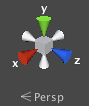

Scene View

The Scene View
The Scene View is your interactive sandbox. You will use the Scene View to select and position environments, the player, the camera, enemies, and all other GameObjects. Maneuvering and manipulating objects within the Scene View are some of the most important functions in Unity, so it's important to be able to do them quickly. To this end, Unity provides keystrokes for the most common operations.
Scene View Navigation
See Scene View Navigation for full details on navigating the scene view. Here's a brief overview of the essentials:
- Hold the right mouse button to enter Flythrough mode. This turns your mouse and keys (plus and for up and down) into quick first-person view navigation.
- Select any GameObject and press the key. This will center the Scene View and pivot point on the selection.
- Use the arrow keys to move around on the X/Z plane.
- Hold and click-drag to orbit the camera around the current pivot point.
- Hold and middle click-drag to drag the Scene View camera around.
- Hold and right click-drag to zoom the Scene View. This is the same as scrolling with your mouse wheel.
You might also find use in the Hand Tool (shortcut: ), especially if you are using a one-button mouse. With the Hand tool is selected,
 Click-drag to drag the camera around.
Click-drag to drag the camera around.  Hold and click-drag to orbit the camera around the current pivot point.
Hold and click-drag to orbit the camera around the current pivot point.  Hold ( on Mac) and click-drag to zoom the camera.
Hold ( on Mac) and click-drag to zoom the camera.In the upper-right corner of the Scene View is the Scene Gizmo. This displays the Scene Camera's current orientation, and allows you to quickly modify the viewing angle.

Each of the coloured "arms" of the gizmo represents a geometric axis. You can click on any of the arms to set the camera to an orthographic (i.e., perspective-free) view looking along the corresponding axis. You can click on the text underneath the gizmo to switch between the normal perspective view and an isometric view. While in isometric mode, you can right-click drag to orbit, and Alt-click drag to pan.
Positioning GameObjects
See Positioning GameObjects for full details on positioning GameObjects in the scene. Here's a brief overview of the essentials:
When building your games, you'll place lots of different objects in your game world. To do this use the Transform Tools in the Toolbar to Translate, Rotate, and Scale individual GameObjects. Each has a corresponding Gizmo that appears around the selected GameObject in the Scene View. You can use the mouse and manipulate any Gizmo axis to alter the Transform Component of the GameObject, or you can type values directly into the number fields of the Transform Component in the Inspector.

Scene View Control Bar

The Scene View control bar lets you see the scene in various view modes - Textured, Wireframe, RGB, Overdraw, and many others. It will also enable you to see (and hear) in-game lighting, game elements, and sound in the Scene View. See View Modes for all the details.
Page last updated: 2012-10-19